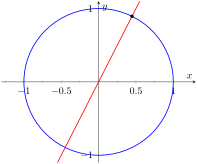
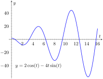
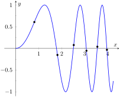
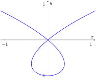

The previous section defined curves based on parametric equations. In this section we'll employ the techniques of calculus to study these curves.
We are still interested in lines tangent to points on a curve. They describe how the \(y\)-values are changing with respect to the \(x\)-values, they are useful in making approximations, and they indicate instantaneous direction of travel.
The slope of the tangent line is still \(\frac{dy}{dx}\text{,}\) and the Chain Rule allows us to calculate this in the context of parametric equations. If \(x=f(t)\) and \(y=g(t)\text{,}\) the Chain Rule states that
Let a curve \(C\) be parametrized by \(x=f(t)\) and \(y=g(t)\text{,}\) where \(f\) and \(g\) are differentiable functions on some interval \(I\) containing \(t=t_0\text{.}\) The tangent line to \(C\) at \(t=t_0\) is the line through \(\big(f(t_0),g(t_0)\big)\) with slope \(m=g'(t_0)/\fp(t_0)\text{,}\) provided \(\fp(t_0)\neq 0\text{.}\)
The normal line to \(C\) at \(t=t_0\) is the line through \(\big(f(t_0),g(t_0)\big)\) with slope \(m=-\fp(t_0)/g'(t_0)\text{,}\) provided \(g'(t_0)\neq 0\text{.}\)
The definition leaves two special cases to consider. When the tangent line is horizontal, the normal line is undefined by the above definition as \(g'(t_0)=0\text{.}\) Likewise, when the normal line is horizontal, the tangent line is undefined. It seems reasonable that these lines be defined (one can draw a line tangent to the “right side” of a circle, for instance), so we add the following to the above definition.
If the tangent line at \(t=t_0\) has a slope of 0, the normal line to \(C\) at \(t=t_0\) is the line \(x=f(t_0)\text{.}\)
If the normal line at \(t=t_0\) has a slope of 0, the tangent line to \(C\) at \(t=t_0\) is the line \(x=f(t_0)\text{.}\)
Example10.3.4.Tangent and Normal Lines to Curves.
Let \(x=5t^2-6t+4\) and \(y=t^2+6t-1\text{,}\) and let \(C\) be the curve defined by these equations.
Find the equations of the tangent and normal lines to \(C\) at \(t=3\text{.}\)
Find where \(C\) has vertical and horizontal tangent lines.
Make note of something that might seem unusual: \(\frac{dy}{dx}\) is a function of \(t\text{,}\) not \(x\text{.}\) Just as points on the curve are found in terms of \(t\text{,}\) so are the slopes of the tangent lines. The point on \(C\) at \(t=3\) is \((31,26)\text{.}\) The slope of the tangent line is \(m=1/2\) and the slope of the normal line is \(m=-2\text{.}\) Thus,
the equation of the tangent line is \(\ds y=\frac12(x-31)+26\text{,}\) and
the equation of the normal line is \(\ds y=-2(x-31)+26\text{.}\)
Figure10.3.5.Graphing tangent and normal lines in Example 10.3.4
To find where \(C\) has a horizontal tangent line, we set \(\frac{dy}{dx}=0\) and solve for \(t\text{.}\) In this case, this amounts to setting \(g'(t)=0\) and solving for \(t\) (and making sure that \(\fp(t)\neq 0\)).
The point on \(C\) corresponding to \(t=-3\) is \((67,-10)\text{;}\) the tangent line at that point is horizontal (hence with equation \(y=-10\)). To find where \(C\) has a vertical tangent line, we find where it has a horizontal normal line, and set \(-\frac{\fp(t)}{g'(t)}=0\text{.}\) This amounts to setting \(\fp(t)=0\) and solving for \(t\) (and making sure that \(g'(t)\neq 0\)).
The point on \(C\) corresponding to \(t=0.6\) is \((2.2,2.96)\text{.}\) The tangent line at that point is \(x=2.2\text{.}\) The points where the tangent lines are vertical and horizontal are indicated on the graph in Figure 10.3.5.
Example10.3.6.Tangent and Normal Lines to a Circle.
Find where the unit circle, defined by \(x=\cos(t)\) and \(y=\sin(t)\) on \([0,2\pi]\text{,}\) has vertical and horizontal tangent lines.
Find the equation of the normal line at \(t=t_0\text{.}\)
The derivative is \(0\) when \(\cos(t) = 0\text{;}\) that is, when \(t=\pi/2,\, 3\pi/2\text{.}\) These are the points \((0,1)\) and \((0,-1)\) on the circle. The normal line is horizontal (and hence, the tangent line is vertical) when \(\sin(t) =0\text{;}\) that is, when \(t= 0,\,\pi,\,2\pi\text{,}\) corresponding to the points \((-1,0)\) and \((0,1)\) on the circle. These results should make intuitive sense.
The slope of the normal line at \(t=t_0\) is \(\ds m=\frac{\sin(t_0) }{\cos(t_0) } = \tan(t_0)\text{.}\) This normal line goes through the point \((\cos(t_0) ,\sin(t_0) )\text{,}\) giving the line
as long as \(\cos(t_0) \neq 0\text{.}\) It is an important fact to recognize that the normal lines to a circle pass through its center, as illustrated in Figure 10.3.7. Stated in another way, any line that passes through the center of a circle intersects the circle at right angles.

Figure10.3.7.Illustrating how a circle's normal lines pass through its center
Example10.3.8.Tangent lines when \(\frac{dy}{dx}\) is not defined.
Find the equation of the tangent line to the astroid \(x=\cos^3(t)\text{,}\)\(y=\sin^3(t)\) at \(t=0\text{,}\) shown in Figure 10.3.9.
Note that both of these are 0 at \(t=0\text{;}\) the curve is not smooth at \(t=0\) forming a cusp on the graph. Evaluating \(\frac{dy}{dx}\) at this point returns the indeterminate form of “0/0”.
We can, however, examine the slopes of tangent lines near \(t=0\text{,}\) and take the limit as \(t\to 0\text{.}\)
We have accomplished something significant. When the derivative \(\frac{dy}{dx}\) returns an indeterminate form at \(t=t_0\text{,}\) we can define its value by setting it to be \(\lim\limits_{t\to t_0}\)\(\frac{dy}{dx}\text{,}\) if that limit exists. This allows us to find slopes of tangent lines at cusps, which can be very beneficial.
We found the slope of the tangent line at \(t=0\) to be 0; therefore the tangent line is \(y=0\text{,}\) the \(x\)-axis.
Subsection10.3.1Concavity
We continue to analyze curves in the plane by considering their concavity; that is, we are interested in \(\frac{d^2y}{dx^2}\text{,}\) “the second derivative of \(y\) with respect to \(x\text{.}\)” To find this, we need to find the derivative of \(\frac{dy}{dx}\) with respect to \(x\text{;}\) that is,
but recall that \(\frac{dy}{dx}\) is a function of \(t\text{,}\) not \(x\text{,}\) making this computation not straightforward.
To make the upcoming notation a bit simpler, let \(h(t) = \frac{dy}{dx}\text{.}\) We want \(\frac{d}{dx}[h(t)]\text{;}\) that is, we want \(\frac{dh}{dx}\text{.}\) We again appeal to the Chain Rule. Note:
In words, to find \(\frac{d^2y}{dx^2}\text{,}\) we first take the derivative of \(\frac{dy}{dx}\)with respect to \(t\), then divide by \(x'(t)\text{.}\) We restate this as a Key Idea.
Key Idea10.3.10.Finding \(\frac{d^2y}{dx^2}\) with Parametric Equations.
Let \(x=f(t)\) and \(y=g(t)\) be twice differentiable functions on an open interval \(I\text{,}\) where \(\fp(t)\neq 0\) on \(I\text{.}\) Then
Concavity is determined by the second derivative of \(y\) with respect to \(x\text{,}\)\(\frac{d^2y}{dx^2}\text{,}\) so we compute that here following Key Idea 10.3.10.
In Example 10.3.4, we found \(\ds\frac{dy}{dx} = \frac{2t+6}{10t-6}\) and \(\fp(t) = 10t-6\text{.}\) So:
Figure10.3.12.Graphing the parametric equations in Example 10.3.11 to demonstrate concavity
The graph of the parametric functions is concave up when \(\frac{d^2y}{dx^2} \gt 0\) and concave down when \(\frac{d^2y}{dx^2} \lt 0\text{.}\) We determine the intervals when the second derivative is greater/less than 0 by first finding when it is 0 or undefined.
As the numerator of \(\ds -\frac{9}{(5t-3)^3}\) is never 0, \(\frac{d^2y}{dx^2} \neq 0\) for all \(t\text{.}\) It is undefined when \(5t-3=0\text{;}\) that is, when \(t= 3/5\text{.}\) Following the work established in Section 3.4, we look at values of \(t\) greater/less than \(3/5\) on a number line:
Reviewing Example 10.3.4, we see that when \(t=3/5=0.6\text{,}\) the graph of the parametric equations has a vertical tangent line. This point is also a point of inflection for the graph, illustrated in Figure 10.3.12.
The video in Figure 10.3.13 shows how this information can be used to sketch the curve by hand.
The points of inflection are found by setting \(\frac{d^2y}{dx^2}=0\text{.}\) This is not trivial, as equations that mix polynomials and trigonometric functions generally do not have “nice” solutions.
In Figure 10.3.15.(a) we see a plot of the second derivative. It shows that it has zeros at approximately \(t=0.5,\,3.5,\,6.5,\,9.5,\,12.5\) and \(16\text{.}\) These approximations are not very good, made only by looking at the graph. Newton's Method provides more accurate approximations. Accurate to 2 decimal places, we have:
\begin{equation*}
t=0.65,\,3.29,\,6.36,\,9.48,\,12.61\,\text{ and } \,15.74\text{.}
\end{equation*}
The corresponding points have been plotted on the graph of the parametric equations in Figure 10.3.15.(b). Note how most occur near the \(x\)-axis, but not exactly on the axis.
(a)
(b)
Figure10.3.15.In (a), a graph of \(\frac{d^2y}{dx^2}\text{,}\) showing where it is approximately 0. In (b), graph of the parametric equations in Example 10.3.14 along with the points of inflection
Subsection10.3.2Arc Length
We continue our study of the features of the graphs of parametric equations by computing their arc length.
Figure10.3.16.Video introduction to arc length for parametric curves
Recall in Section 7.4 we found the arc length of the graph of a function, from \(x=a\) to \(x=b\text{,}\) to be
\begin{equation*}
L = \int_a^b\sqrt{1+\left(\frac{dy}{dx}\right)^2}\, dx\text{.}
\end{equation*}
We can use this equation and convert it to the parametric equation context. Letting \(x=f(t)\) and \(y=g(t)\text{,}\) we know that \(\frac{dy}{dx} = g'(t)/\fp(t)\text{.}\) It will also be useful to calculate the differential of \(x\text{:}\)
Note the new bounds (no longer “\(x\)” bounds, but “\(t\)” bounds). They are found by finding \(t_1\) and \(t_2\) such that \(a= f(t_1)\) and \(b=f(t_2)\text{.}\) This formula is important, so we restate it as a theorem.
Theorem10.3.17.Arc Length of Parametric Curves.
Let \(x=f(t)\) and \(y=g(t)\) be parametric equations with \(\fp\) and \(g'\) continuous on \([t_1,t_2]\text{,}\) on which the graph traces itself only once. The arc length of the graph, from \(t=t_1\) to \(t=t_2\text{,}\) is
\begin{equation*}
L = \int_{t_1}^{t_2} \sqrt{\fp(t)^2+g'(t)^2}\, dt\text{.}
\end{equation*}
As before, these integrals are often not easy to compute. We start with a simple example, then give another where we approximate the solution.
Example10.3.18.Arc Length of a Circle.
Find the arc length of the circle parametrized by \(x=3\cos(t)\text{,}\)\(y=3\sin(t)\) on \([0,3\pi/2]\text{.}\)
This should make sense; we know from geometry that the circumference of a circle with radius 3 is \(6\pi\text{;}\) since we are finding the arc length of \(3/4\) of a circle, the arc length is \(3/4\cdot 6\pi = 9\pi/2\text{.}\)
Example10.3.19.Arc Length of a Parametric Curve.
The graph of the parametric equations \(x=t(t^2-1)\text{,}\)\(y=t^2-1\) crosses itself as shown in Figure 10.3.20, forming a “teardrop.” Find the arc length of the teardrop.

Figure10.3.20.A graph of the parametric equations in Example 10.3.19, where the arc length of the teardrop is calculated
We can see by the parametrizations of \(x\) and \(y\) that when \(t=\pm 1\text{,}\)\(x=0\) and \(y=0\text{.}\) This means we'll integrate from \(t=-1\) to \(t=1\text{.}\) Applying Theorem 10.3.17, we have
Unfortunately, the integrand does not have an antiderivative expressible by elementary functions. We turn to numerical integration to approximate its value. Using 4 subintervals, Simpson's Rule approximates the value of the integral as \(2.65051\text{.}\) Using a computer, more subintervals are easy to employ, and \(n=20\) gives a value of \(2.71559\text{.}\) Increasing \(n\) shows that this value is stable and a good approximation of the actual value.
Subsection10.3.3Surface Area of a Solid of Revolution
Related to the formula for finding arc length is the formula for finding surface area. We can adapt the formula found in Theorem 7.4.13 from Section 7.4 in a similar way as done to produce the formula for arc length done before.
Theorem10.3.21.Surface Area of a Solid of Revolution.
Consider the graph of the parametric equations \(x=f(t)\) and \(y=g(t)\text{,}\) where \(\fp\) and \(g'\) are continuous on an open interval \(I\) containing \(t_1\) and \(t_2\) on which the graph does not cross itself.
The surface area of the solid formed by revolving the graph about the \(x\)-axis is (where \(g(t)\geq 0\) on \([t_1,t_2]\)):
\begin{equation*}
\text{ Surface Area } = 2\pi\int_{t_1}^{t_2} g(t)\sqrt{\fp(t)^2+g'(t)^2}\, dt\text{.}
\end{equation*}
The surface area of the solid formed by revolving the graph about the \(y\)-axis is (where \(f(t)\geq 0\) on \([t_1,t_2]\)):
\begin{equation*}
\text{ Surface Area } = 2\pi\int_{t_1}^{t_2} f(t)\sqrt{\fp(t)^2+g'(t)^2}\, dt\text{.}
\end{equation*}
Example10.3.22.Surface Area of a Solid of Revolution.
Consider the teardrop shape formed by the parametric equations \(x=t(t^2-1)\text{,}\)\(y=t^2-1\) as seen in Example 10.3.19. Find the surface area if this shape is rotated about the \(x\)-axis, as shown in Figure 10.3.23.
The teardrop shape is formed between \(t=-1\) and \(t=1\text{.}\) Using Theorem 10.3.21, we see we need for \(g(t)\geq 0\) on \([-1,1]\text{,}\) and this is not the case. To fix this, we simplify replace \(g(t)\) with \(-g(t)\text{,}\) which flips the whole graph about the \(x\)-axis (and does not change the surface area of the resulting solid). The surface area is:
Once again we arrive at an integral that we cannot compute in terms of elementary functions. Using Simpson's Rule with \(n=20\text{,}\) we find the area to be \(S=9.44\text{.}\) Using larger values of \(n\) shows this is accurate to 2 places after the decimal.
After defining a new way of creating curves in the plane, in this section we have applied calculus techniques to the parametric equation defining these curves to study their properties. In the next section, we define another way of forming curves in the plane. To do so, we create a new coordinate system, called polar coordinates, that identifies points in the plane in a manner different than from measuring distances from the \(y\)- and \(x\)- axes.
Exercises10.3.4Exercises
Terms and Concepts
1.
True or False? Given parametric equations \(x=f(t)\) and \(y=g(t)\text{,}\)\(\lz{y}{x} = \fp(t)/g'(t)\text{,}\) as long as \(g'(t) \neq 0\text{.}\)
True
False
2.
Given parametric equations \(x=f(t)\) and \(y=g(t)\text{,}\) the derivative \(\frac{dy}{dx}\) as given in Key Idea 10.3.2 is a function of ?
3.
True or False? Given parametric equations \(x=f(t)\) and \(y=g(t)\text{,}\) to find \(\lzn{2}{y}{x}\text{,}\) one simply computes \(\lzoo{t}{\lz{y}{x}}\text{.}\)
True
False
4.
True or False? If \(\lz{y}{x}=0\) at \(t=t_0\text{,}\) then the normal line to the curve at \(t=t_0\) is a vertical line.
True
False
Problems
Exercise Group.
In the following exercises, parametric equations for a curve are given.
Find \(\ds\frac{dy}{dx}\text{.}\)
Find the equations of the tangent and normal line(s) at the point(s) given.
Sketch the graph of the parametric functions along with the found tangent and normal lines.
5.
\(x=t\text{,}\)\(y=t^2\text{;}\)\(t=1\)
6.
\(x=\sqrt{t}\text{,}\)\(y=5t+2\text{;}\)\(t=4\)
7.
\(x=t^2-t\text{,}\)\(y=t^2+t\text{;}\)\(t=1\)
8.
\(x=t^2-1\text{,}\)\(y=t^3-t\text{;}\)\(t=0\) and \(t=1\)
9.
\(x=\sec(t)\text{,}\)\(y=\tan(t)\) on \((-\pi/2,\pi/2)\text{;}\)\(t=\pi/4\)
10.
\(x=\cos(t)\text{,}\)\(y=\sin(2t)\) on \([0,2\pi]\text{;}\)\(t=\pi/4\)
11.
\(x=\cos(t) \sin(2t)\text{,}\)\(y=\sin(t) \sin(2t)\) on \([0,2\pi]\text{;}\)\(t=3\pi/4\)
Find the \(t\)-values where the curve defined by the given parametric equations has a horizontal tangent line. Note: these are the same equations as in Exercises 10.3.4.5 — Exercise 10.3.4.12.
13.
\(x=t\text{,}\)\(y=t^2\)
14.
\(x=\sqrt{t}\text{,}\)\(y=5t+2\)
15.
\(x=t^2-t\text{,}\)\(y=t^2+t\)
16.
\(x=t^2-1\text{,}\)\(y=t^3-t\)
17.
\(x=\sec(t)\text{,}\)\(y=\tan(t)\) on \((-\pi/2,\pi/2)\)
18.
\(x=\cos(t)\text{,}\)\(y=\sin(2t)\text{,}\) on \([0,2\pi)\)
19.
\(x=\cos(t) \sin(2t)\text{,}\)\(y=\sin(t) \sin(2t)\) on \([0,2\pi]\)
Find the point \(t=t_0\) where the graph of the given parametric equations is not smooth, then find \(\lim\limits_{t\to t_0}\frac{dy}{dx}\text{.}\)
21.
\(x=\frac{1}{t^2+1}\text{,}\)\(y=t^3\)
22.
\(x=-t^3+7t^2-16t+13\text{,}\)\(y=t^3-5t^2+8t-2\)
23.
\(x=t^3-3t^2+3t-1\text{,}\)\(y=t^2-2t+1\)
24.
\(\ds x=\cos^2(t)\text{,}\)\(y=1-\sin^2(t)\)
Exercise Group.
For the given parametric equations for a curve, find \(\frac{d^2y}{dx^2}\text{,}\) then determine the intervals on which the graph of the curve is concave up/down. Note: these are the same equations as in Exercises 10.3.4.5 — Exercise 10.3.4.12.
25.
\(x=t\text{,}\)\(y=t^2\)
26.
\(x=\sqrt{t}\text{,}\)\(y=5t+2\)
27.
\(x=t^2-t\text{,}\)\(y=t^2+t\)
28.
\(x=t^2-1\text{,}\)\(y=t^3-t\)
29.
\(x=\sec(t)\text{,}\)\(y=\tan(t)\) on \((-\pi/2,\pi/2)\)
30.
\(x=\cos(t)\text{,}\)\(y=\sin(2t)\text{,}\) on \([0,2\pi)\)
31.
\(\ds x=\cos(t) \sin(2t)\text{,}\)\(y=\sin(t) \sin(2t)\) on \([-\pi/2,\pi/2]\)
Find the arc length of the graph of the parametric equations on the given interval(s).
33.
\(x=-3\sin(2t)\text{,}\)\(y=3\cos(2t)\) on \([0,\pi]\)
34.
\(x=e^{t/10}\cos(t)\text{,}\)\(y=e^{t/10}\sin(t)\) on \([0,2\pi]\) and \([2\pi,4\pi]\text{.}\)
35.
\(x=5t+2\text{,}\)\(y=1-3t\) on \([-1,1]\)
36.
\(x=2t^{3/2}\text{,}\)\(y=3t\) on \([0,1]\)
Exercise Group.
In the following exercises, numerically approximate the given arc length.
37.
Approximate the arc length of one petal of the rose curve \(x=\cos(t) \cos(2t)\text{,}\)\(y=\sin(t) \cos(2t)\) using Simpson's Rule and \(n=4\text{.}\)
38.
Approximate the arc length of the “bow tie curve” \(x=\cos(t)\text{,}\)\(y=\sin(2t)\) using Simpson's Rule and \(n=6\text{.}\)
39.
Approximate the arc length of the parabola \(x=t^2-t\text{,}\)\(y=t^2+t\) on \([-1,1]\) using Simpson's Rule and \(n=4\text{.}\)
40.
A common approximate of the circumference of an ellipse given by \(x=a\cos(t)\text{,}\)\(y=b\sin(t)\) is \(\ds C\approx 2\pi\sqrt{\frac{a^2+b^2}2}\text{.}\) Use this formula to approximate the circumference of \(x=5\cos(t)\text{,}\)\(y=3\sin(t)\) and compare this to the approximation given by Simpson's Rule and \(n=6\text{.}\)
Exercise Group.
In the following exercises, a solid of revolution is described. Find or approximate its surface area as specified.
41.
Find the surface area of the sphere formed by rotating the circle \(x=2\cos(t)\text{,}\)\(y=2\sin(t)\) about:
the \(x\)-axis and
the \(y\)-axis.
42.
Find the surface area of the torus (or “donut”) formed by rotating the circle \(x=\cos(t) +2\text{,}\)\(y=\sin(t)\) about the \(y\)-axis.
43.
Approximate the surface area of the solid formed by rotating the “upper right half” of the bow tie curve \(x=\cos(t)\text{,}\)\(y=\sin(2t)\) on \([0,\pi/2]\) about the \(x\)-axis, using Simpson's Rule and \(n=4\text{.}\)
44.
Approximate the surface area of the solid formed by rotating the one petal of the rose curve \(x=\cos(t) \cos(2t)\text{,}\)\(y=\sin(t) \cos(2t)\) on \([0,\pi/4]\) about the \(x\)-axis, using Simpson's Rule and \(n=4\text{.}\)